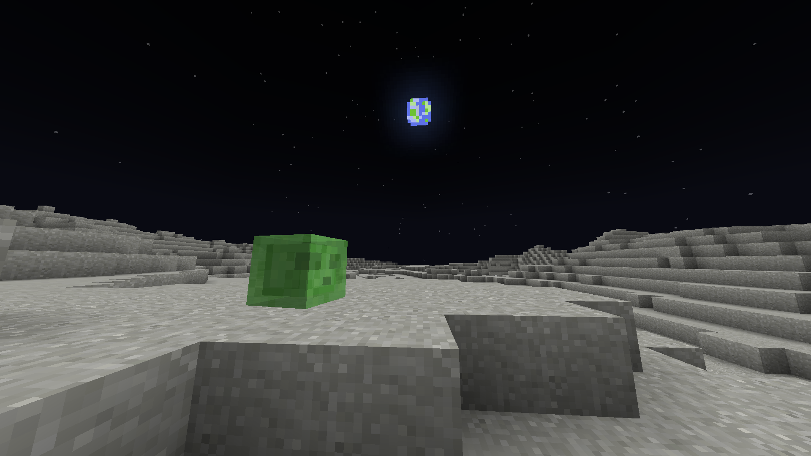
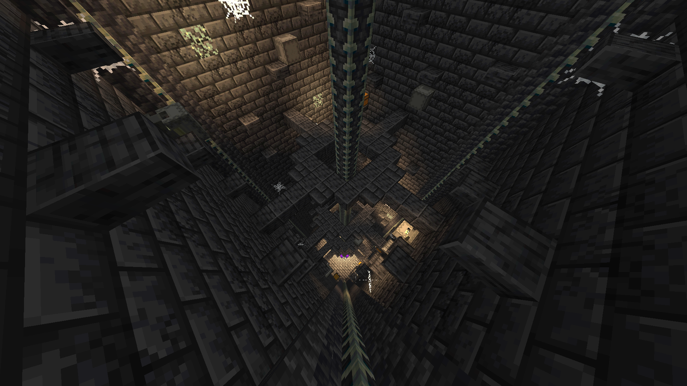
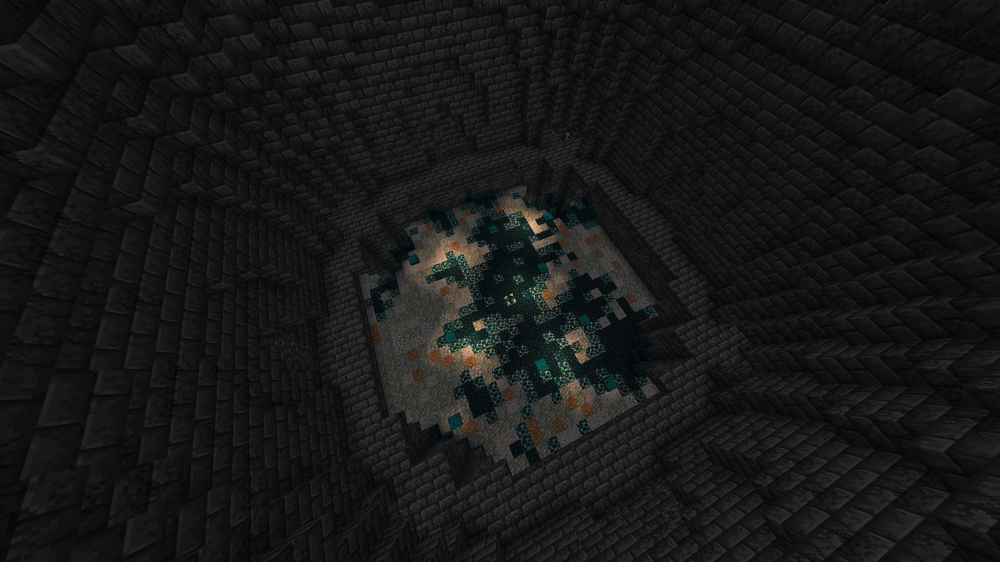

The Moon
The moon is a custom dimension on SandbloxMC serving as an alternative to the End dimension. The terrain surface is generated based on a real heightmap of the moon, provided by NASA. To view a live map of the moon dimension, click on the link here.
Travelling to the Moon
To teleport to the moon, your player's height must exceed the world build limit of y-level 320. From there, you will be teleported to the same coordinates on the Moon dimension.
Here are a few methods to reach the build limit:
- Building a tall pillar
- Creating a bubble column
- Making a vertical flying machine
- Using a riptide trident during the rain
Mob spawning
There are three naturally spawning mobs on the Moon. Slimes spawn occasionally on the Moon surface, while Zombies and Skeletons spawn in lunar caves.
Ore generation
There are two natually generating ores on the Moon: coal ore and copper ore. Both are found commonly in lunar caves.
Moon structures
There are two naturally generating structures beneath the Moon surface.
The moon dungeon is a vertical structure containing shulkers and loot chests. These chests can contain armour trims, experience bottles, dragon's breath, sponges and more! The structure is surrounded by bedrock, with the only opening at the top.
The warden den is a battle arena with a sculk shrieker in the center. Creating noise will cause the Warden to spawn inside the arena. Once killed, the warden will drop a broken elytra.
This structure contains 8 loot chests, with the same loot table as the Moon dungeon. Additionally, there are suspicious gravel blocks on the floor containing loot such as phantom membranes, Sniffer eggs, pottery sherds and more!
Returning home
There are two ways to return home from the Moon dimension. Exceeding the build limit of y-level 320 will teleport you to the same coordinates on the earth. Alternatively, you can use towny travel commands like /t spawn to return home.